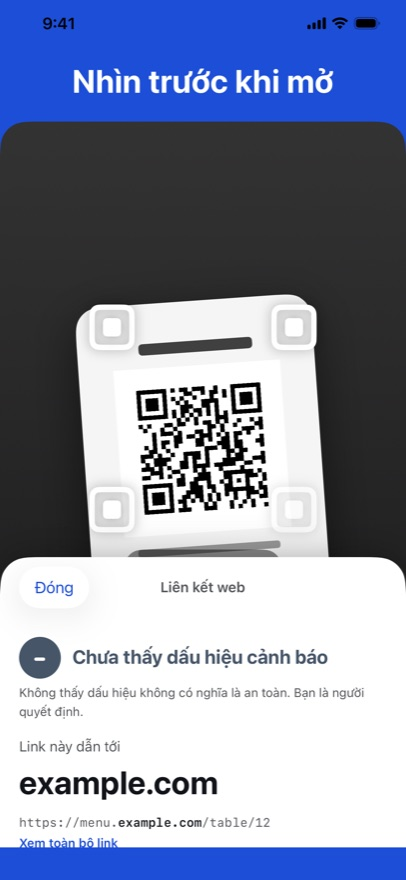
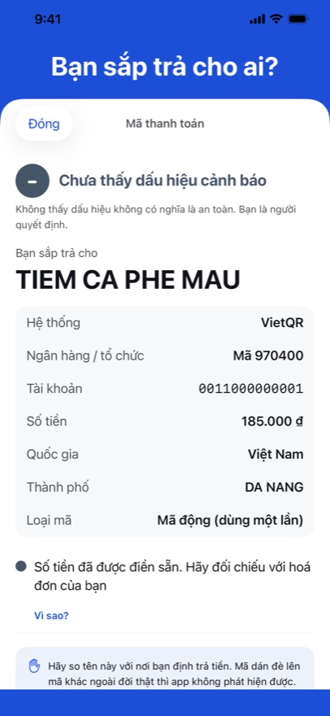
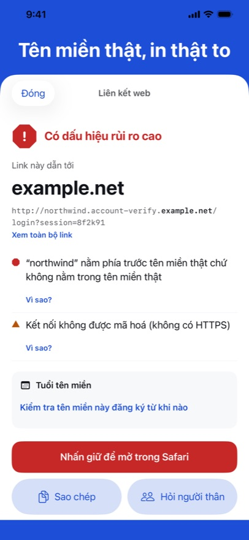

QR Trust Scanner cho bạn thấy một mã QR hay một link dẫn tới đâu trước khi chạm: tên miền thật in to, điều gì đáng xem lại, và — nếu là mã thanh toán — tiền đi tới ai. App không bao giờ tự mở bất cứ thứ gì, và mọi thứ được kiểm tra ngay trên iPhone của bạn.



Tên miền thật, in to
Một link có thể đặt bất kỳ chữ quen thuộc nào trước địa chỉ của người khác. App cho bạn thấy tên miền thật trước tiên.
Bạn sắp trả cho ai?
Với mã QR thanh toán chuẩn EMVCo dùng tại Việt Nam, Brazil, Indonesia và Malaysia: người nhận, số tiền, và giá trị kiểm tra của mã có đúng không.
Tín hiệu, không phán quyết
Mỗi tín hiệu là một câu nói thường, kèm “Vì sao?”. Ba mức, và bạn là người quyết định.
Sắp có trên App Store
Dữ liệu mở chúng tôi dùng
- Danh sách cảnh báo: PhishDestroy “destroylist” (github.com/phishdestroy/destroylist), giấy phép MIT, © 2019 PhishDestroy.
- Public Suffix List (publicsuffix.org), Mozilla Public License 2.0.
- IANA: danh sách đuôi tên miền của vùng gốc và sổ đăng ký bootstrap RDAP.